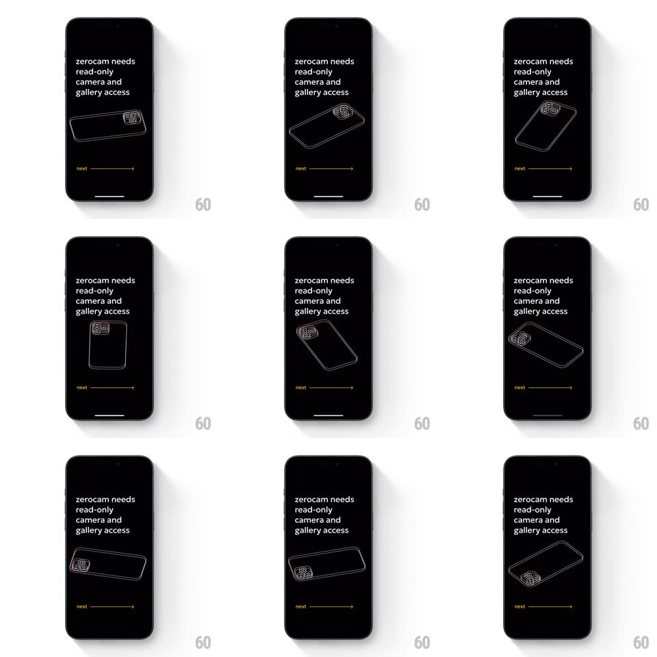

Media
Frame-by-frame

Rebuild this interaction 1:1: Zerocam's permissions screen - a white 3D wireframe iPhone rotates in one continuous slow tumble beneath plain statement text on pure black.

Rebuild this interaction 1:1: Zerocam's permissions screen - a white 3D wireframe iPhone rotates in one continuous slow tumble beneath plain statement text on pure black.
## Integration
Integration: stack-agnostic spec - springs given as stiffness/damping, timed motions as duration + curve; map every value to your framework and animation library of choice.
## Scene
A black screen: lowercase white text ("zerocam needs read-only camera and gallery access") top-left, a wireframe iPhone (body outline plus camera-cluster detail) tumbling in 3D at center, and a yellow "next" with a long arrow line bottom-left.
## Motion spec
Pattern: continuous 3D wireframe tumble.
- The phone rotates on a slow compound tumble: primarily around Y (1rev/9s) with a gentle X wobble (+-20deg, 5s period) and a slight Z drift - it never stops, never repeats exactly, and never faces fully away for long.
- The wireframe is thin white strokes (1px) with a faint glow; the camera cluster (lens circles) gets slightly brighter strokes so the back of the phone reads clearly as it passes.
- A soft groundless float accompanies the tumble (translateY +-8px, 4s) so the phone feels suspended, not axis-locked.
- "next" and its arrow idle with a hairline shimmer (the arrow line's dash slides slowly rightward, 2s loop); tapping next presses the text (opacity dip, 100ms) and the phone accelerates into a half-spin (extra 180deg, 400ms ease-in) as the screen transitions.
- The text never animates - it was there before you looked.
## Calibration
- The wireframe must stay elegant at all angles: hide back-facing strokes or fade them to 30% so the shape never turns to spaghetti.
- One yellow on the whole screen (the next link); everything else white on black.
## Reduced motion
Phone holds a slow back-and-forth sway (+-15deg, 4s) instead of full tumble.
## Don't miss
- The tumble is CONTINUOUS - no easing in and out, no pause at a hero angle.
- The camera cluster is on the phone's back; the rotation deliberately shows it off.